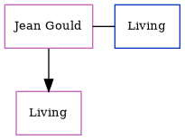

Doris Thomas, the wife of Keith John L Martin (the third cousin on the father's side of Nigel Horne), and married Keith in Exeter, Devon, England around Aug 19631.
Citations
England & Wales Marriages 1837-2005 - Findmypast
Family Tree

Generated by ged2site. Last updated on Jun 11, 2024